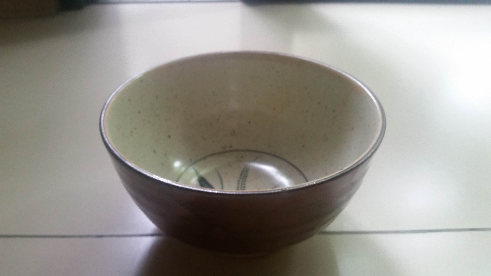
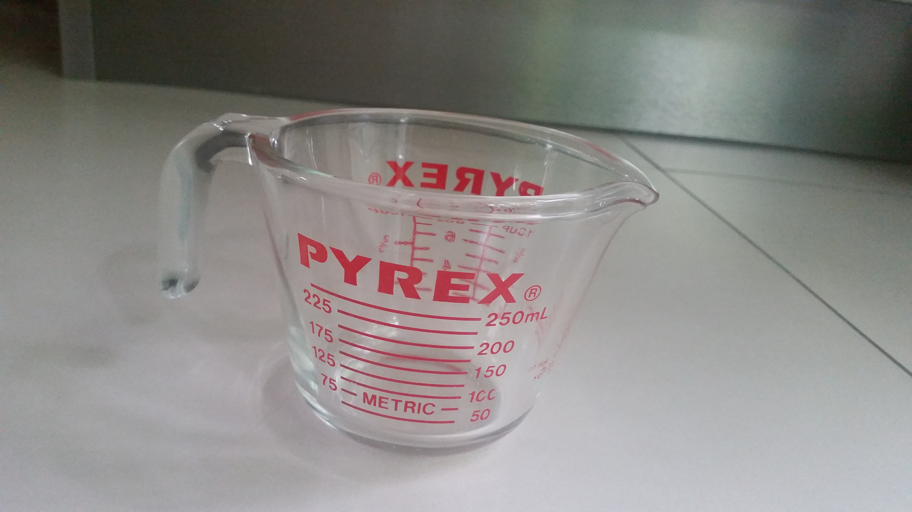
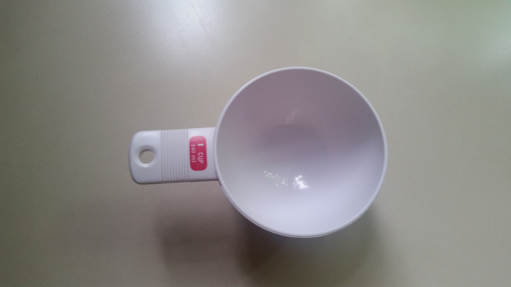
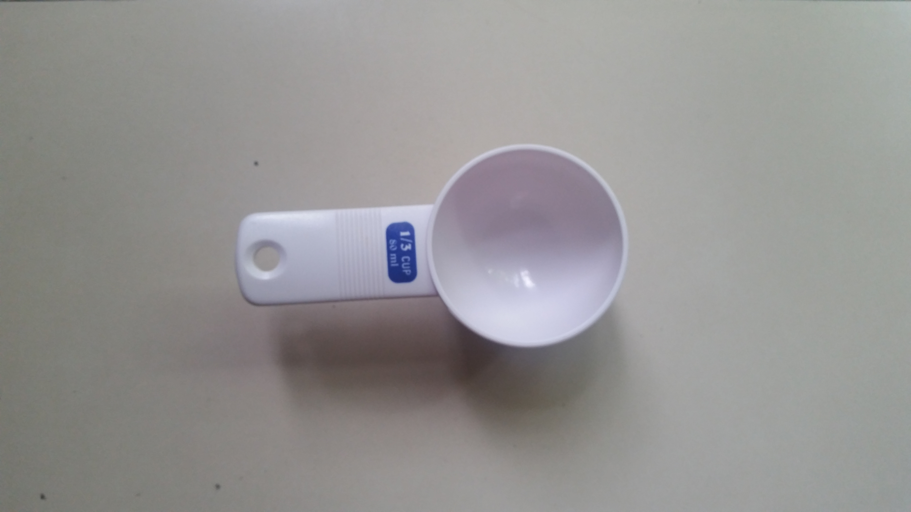
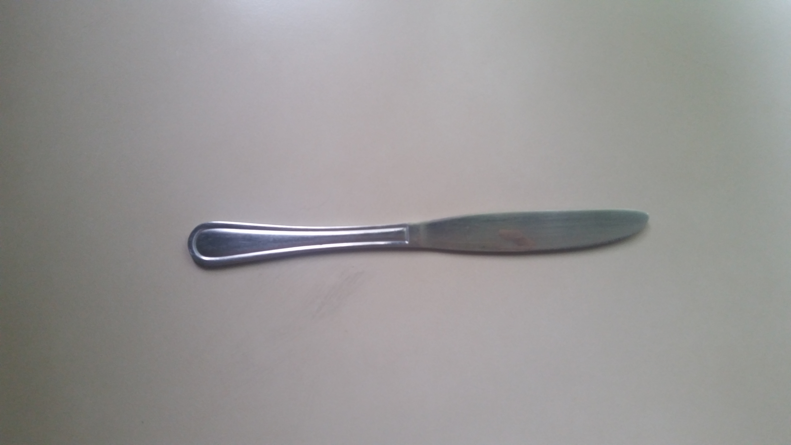
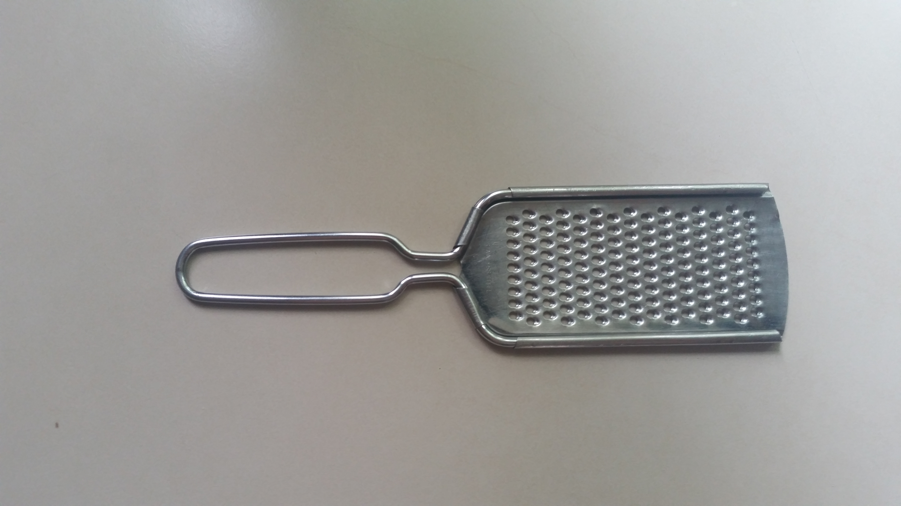

Equipment

This bowl can withstand high heat. It is used to contain wet and/or dry ingredients.
{kind=link}
Clay Porcelain Mixing Bowl
1lb 8.375oz P220.00 - P240.00
This bowl can withstand high heat. It is used to contain wet and/or dry ingredients.

Cupcake Liner
2oz P45.00 - P60.00/400 sheets
The cupcake sheet is designed to prevent the chance of baked goods from sticking to the muffin tray during the baking process.

Glass Bowl
56.75oz P150.00 - P180.00
This bowl can be used to contain the eggs being mixed or when making fudge. One can see the ingredients being placed in the glass bowl from top to bottom due its transparent feature.

Standard for measuring liquids to a maximum measurement of 250 ml. It can be used to transfer liquids to a bowl for mixing and is resistant to high heat.
{kind=link}
Glass Liquid Measuring Cup
13.87oz P780.00 - P800.00
Standard for measuring liquids to a maximum measurement of 250 ml. It can be used to transfer liquids to a bowl for mixing and is resistant to high heat.

Greaseproof Paper
28.5in x 22.5in P45.00 - P50.00/10 sheets
Used to prevent the dough from sticking to the baking tray so that less time is needed when cleaning.

Hand Pepper Grinder
9.25oz P300.00 - Php 310.00
Whenever I have to season certain dishes, I manually crush fresh peppercorns. As I turn the knob of the pepper grinder, the blades located inside shred the peppercorns into powder.

Used to contain and transfer dry ingredients like flour, sugar, powder 1 cup at a time. A butter knife can be used to scrape the excess amount on top for the amount to be exactly 1 cup.
{kind=link}
Plastic Measuring Cup (1 cup)
1.375oz P75.00 - P90.00
Used to contain and transfer dry ingredients like flour, sugar, powder 1 cup at a time. A butter knife can be used to scrape the excess amount on top for the amount to be exactly 1 cup.

Used to contain and transfer dry ingredients like flour, sugar, powder 1/3 cup at a time. A butter knife can be used to scrape the excess amount on top for the amount to be exactly 1/3 cup.
{kind=link}
Plastic Measuring Cup (1/3 cup)
0.875oz P55.00 - P70.00
Used to contain and transfer dry ingredients like flour, sugar, powder 1/3 cup at a time. A butter knife can be used to scrape the excess amount on top for the amount to be exactly 1/3 cup.

Stainless Steel Measuring Spoons
1.625oz P180.00 - P200.00
These are for measuring ingredients in small amounts (e.g. 1 tablespoon = 14.79 ml).

I use this mainly for slicing butter so that it will be easier to mix with other ingredients like sugar. I also use it to thinly slice fruits like bananas for desserts.
{kind=link}
Stainless Steel Butter Knife
1.45oz P85.00 - P100.00
I use this mainly for slicing butter so that it will be easier to mix with other ingredients like sugar. I also use it to thinly slice fruits like bananas for desserts.
{kind=link}

Mostly for shredding hard cheese like cheddar when making dishes like cheese sauce. The melting time of cheese is faster when shredded.
{kind=link}
Stainless Steel Grater
1.75oz P130.00 - P150.00
Mostly for shredding hard cheese like cheddar when making dishes like cheese sauce. The melting time of cheese is faster when shredded.

Stainless Steel Spoon
2.25oz P110.00 - P120.00
I use my spoons when tasting the sauces I make like cheese sauce. I was able to use them in scraping off vegetables that were stuck on the baking tray from the oven.

Stainless Steel Whisk
3.25oz P110.00 - P120.00
I use this to whisk wet ingredients like eggs after cracking them open. When making desserts like cupcakes I use it to combine the wet and dry ingredients together.

Stainless Steel Ice Cream Scooper
5.125oz P140.00 - P150.00
This is needed when dividing the dough mixture to small pieces for even portioning. There is a built-in semi-circle shaped scraper that helps push the remains of the mixture out of the scooper.